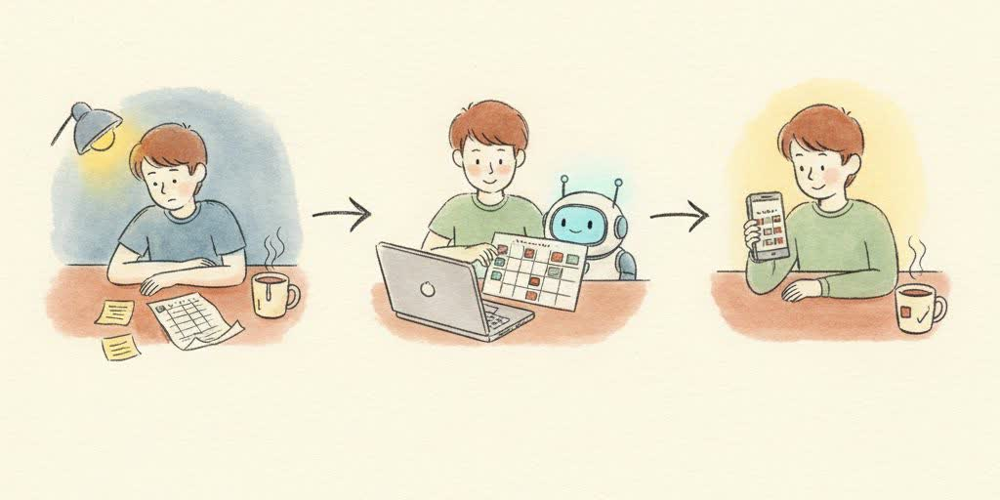
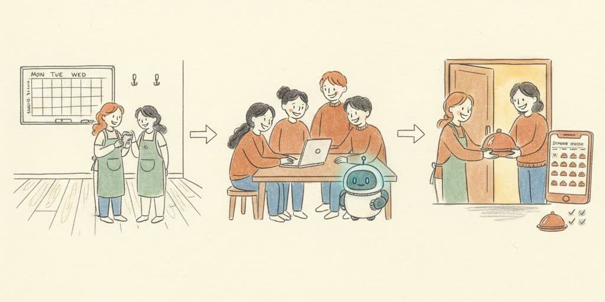
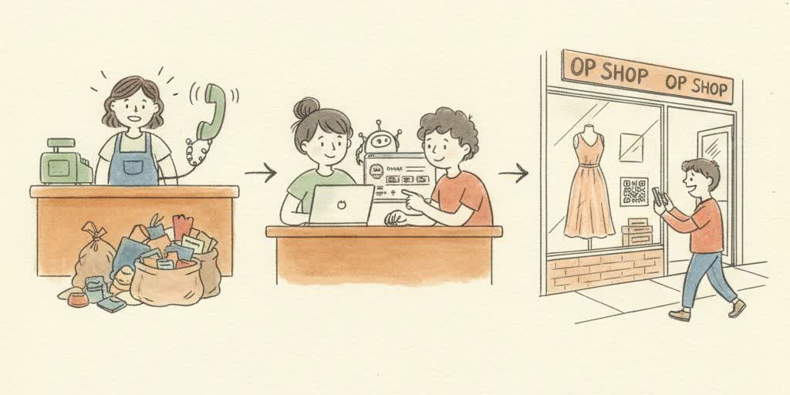
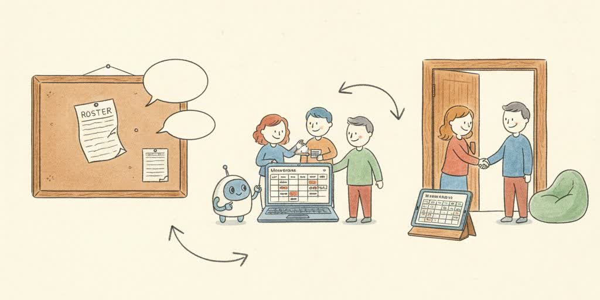

If building software sounds like something for other people, this page is for you. Four examples from the work so far: a personal project, a community charity, a local shop, and a church. Each one started as a real annoyance somewhere and ended as something handed over.

One young person: a heavy term, three commitments and a part-time job, and a paper timetable that was out of date by Tuesday. Over two weekends they built a planner of their own. Every assignment, training session and shift in one place, the week laid out every Sunday evening. When something slips, the planner reshuffles the week instead of the week falling apart.
The agent taught each piece as it was needed and explained every change back, but the decisions were all theirs. It is the kind of build nobody hands you, because it only fits the person who made it.
The build. A personal study and life planner, one page, built for their own phone.
The agent's part. Taught the planning logic piece by piece, answered the “why is this broken” moments, and never took the keyboard.
What changed. No more night-before panic. Everything finished two days early, every time, that whole term.

A local charity supporting families through a hard stretch was coordinating meals on a whiteboard and a group chat, and every week something fell through the cracks. A group of young people built them a meal train instead: a night-by-night roster, private by default, no personal details on display. People claim a night, get a gentle reminder, and the coordinator can finally see what is covered.
The agent helped them think through the sign-up flow, and drafted the reminder messages. The young people rewrote them in their own words before anything went out. Nothing fancy. On time, every night.
The build. A meal train page for a local charity, private by default, no accounts to create.
The agent's part. Walked the young people through the sign-up flow and drafted the reminders they then made their own.
What changed. Every night covered for six weeks straight, and one very relieved coordinator.

The church op shop got the same three phone calls all day: are you open, do you take furniture, when is the sale. Two young people built the shop a one page site: the hours, what the shop happily accepts, and a photo rail of the good donations that week. Then they taped a QR code to the front window.
The agent turned their scribbled notes into first drafts, and taught them how to publish it themselves. The words that mattered, they wrote. The shop's window now does the talking before anyone reaches for the phone.
The build. A one page shop site: hours, a donations guide, and a photo rail, with a QR code in the window.
The agent's part. Turned notes into first drafts and taught the publish-steps once, carefully.
What changed. The phone quietened down, and donations went up. People could finally see what the shop actually wanted.

The volunteer roster lived on a paper sheet that went missing and a group chat where nobody could see the gaps. The youth group built the church a rota instead: welcome team, setup, children's ministry, all in one link. No accounts, no app to install, and a late swap is one tap. The gaps are visible to everyone, so cover gets found in minutes rather than announced hopefully on a Sunday.
The agent asked the questions adults forget to ask, and tested the awkward cases with them: holidays, double-ups, the week everything happens at once. The paper sheet is now a fridge magnet, which is the highest honour a paper sheet can receive.
The build. A volunteer rota for the whole church, one link, no accounts, phone friendly.
The agent's part. Tested the edge cases with the young people and asked the questions that found them.
What changed. Gaps now show for everyone, and cover gets found in minutes.
None of these needed a computer science degree. Each one started as a real annoyance somewhere and ended as something handed over to the person who needed it. That is the whole job: find the annoyance, build the small thing, give it away.